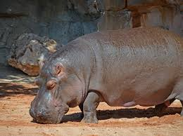

Leó
El rei de la jungla.
Pingüí
Viu al fred i neda molt bé.
Tigre
Conegut pel seu bell estrí.
Rinoceronte
mamífer gran i herbívor amb una gruixuda pell grisa i un o dos banyes al musell.
Elefante
mamífer gegantí amb grans orelles, una llarga trompa i ullals corbats d’ivori.
Gorila
primat robust i intel·ligent que viu en grups i es desplaça principalment per terra.

Hipopotamo
mamífer aquàtic massís que viu en rius i llacs, amb una gran boca i comportament territorial.

Koala
marsupial arborícola i tranquil que s’alimenta principalment de fulles d’eucaliptusp.